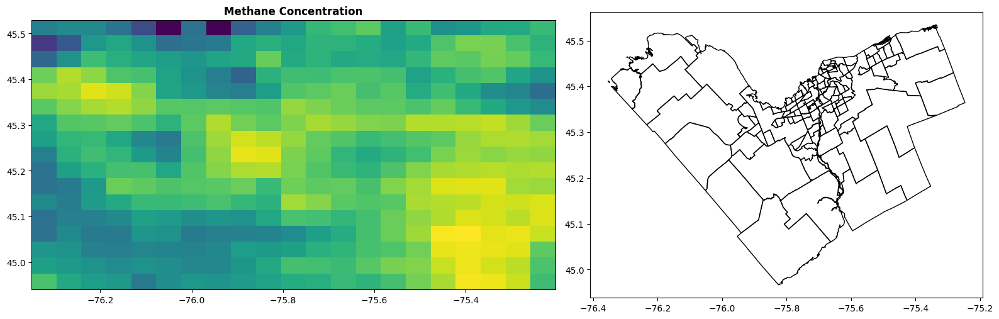

Geospatial Analysis of Methane Concentration Trends in Ottawa
Project Description
This project was completed as part of the “Seminar for Geomatics” course during my academic exchange program at Carleton University, Ottawa, Canada. The objective was to investigate methane concentration trends throughout the year and identify the months with the highest average levels in Ottawa. Methane (CH4) is a critical greenhouse gas, and analyzing its spatial and temporal patterns provides valuable insights for climate monitoring and urban environmental planning.
The project involved the acquisition, preprocessing, and visualization of Earth observation data from the Sentinel-5P satellite. The analysis included both daily and monthly average methane concentrations, offering a comprehensive view of short-term variations and long-term seasonal patterns.
Key Highlights
-
Satellite Data Acquisition: Retrieved Sentinel-5P Level-3 methane (CH4) data using the openEO API from the Copernicus Data Space Ecosystem, ensuring consistent, high-quality atmospheric data for analysis.
-
Daily Averaging: Calculated daily average concentrations to reduce noise, identify outliers, and establish a reliable baseline for trend detection before aggregating to monthly summaries.
-
Monthly Aggregation: Aggregated daily data into monthly means to reveal seasonal cycles and determine which months exhibited peak methane emissions.
-
Cloud-Based Workflow: Used Google Colab to run the Python-based workflow, enabling seamless integration with Google Drive for data storage and collaboration.
-
Open-Source Geospatial Tools: Leveraged powerful Python libraries such as
xarray, rasterio, geopandas, matplotlib, numpy etc., to:
- Parse and analyze multi-temporal raster datasets
- Compute daily and monthly spatial averages
- Visualize geospatial and temporal trends
-
Scientific Insight: The study revealed elevated methane levels during late fall and winter, potentially linked to atmospheric conditions (e.g., low mixing height) and anthropogenic factors such as heating-related emissions.
Output Preview
The image below displays the monthly average methane concentration
